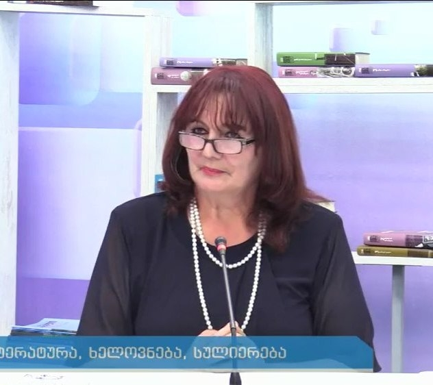
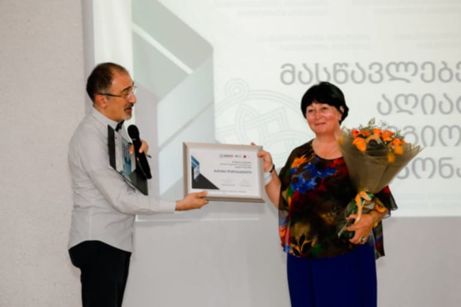
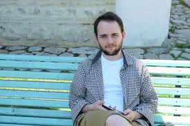
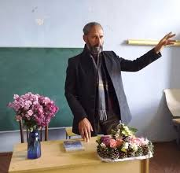
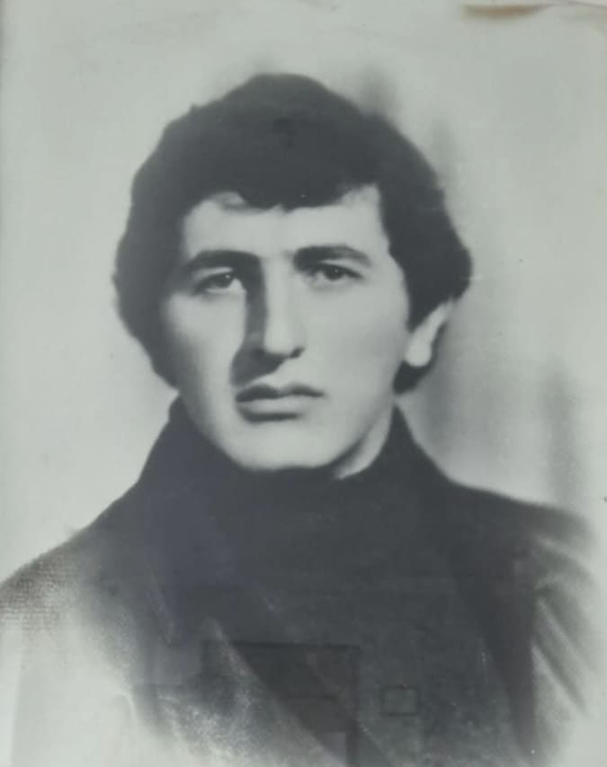
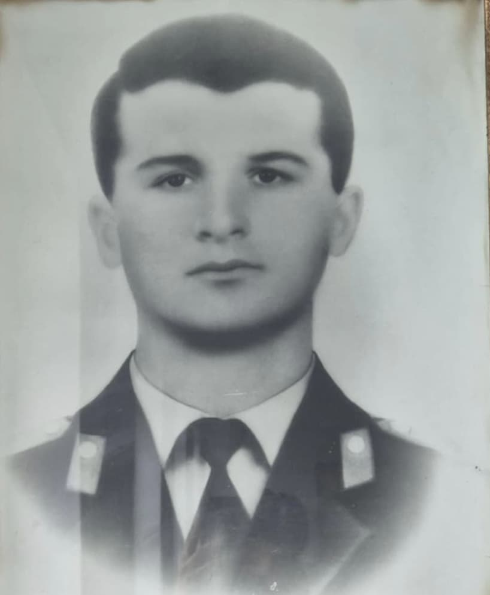

"მასწავლებელთა აღიარების რეგიონულ კონკურსში " გამარჯვებული მენტორი მასწავლებელი მარეხი დიდებაშვილი

მინდია არაბული 1994 წელს დაიბადა. 2017-ში დაამთავრა თავისუფალი უნივერსიტეტის საერთაშორისო ურთიერთობების ფაკულტეტი იაპონური ენის განხრით. ქმნის ტელე-, ანიმაციური ფილმების და სარეკლამო სცენარებს. მისი მოთხრობები შესულია რამდენიმე ლიტერატურულ საკონკურსო კრებულში. 2016 წელს კონკურსში “შემოდგომის ლეგენდა” მოიპოვა მეორე ადგილი. 2018 წელს კონკურსში “Penმარათონი” მესამე ადგილის მფლობელი გახდა. ამჟამად მუშაობს სარეკლამო სააგენტოში “ლივინგსტონი”.


1982 წელს დაამთავრა გომბორის საჯარო სკოლა. მსახიობობაზე ოცნებობდა და შოთა რუსთაველის თეატრალური ინსტიტუტის სტუდენტი გახდა. ომის დაწყების წელს დაამთავრა... თეატრი და სცენა სამომავლოდ გადადო. მიხეილმა ხელში იარაღი აიღო და სამშობლოს დამცველთა რიღებში ჩადგა. გზნებარე, ენერგიულ, ერთგულ, უღალატო მეგობრად თვლიდნენ მას თანამებრძოლები, მეგობრები, თანასოფლელები, ყველა, ვინც იცნობდა. მთის ლამაზ სოფელში დაბადებული ლომგულა ბიჭი სოხუმის მახლობლად დაეცა, როგორც გმირი. დიდი პატივით მიაბარეს მშობლიური სოფლის მიწას გულ დათუთქულებმა და ამავე დროს ამაყმა თანასოფლელებმა. მიხეილი სიკვლიდის შემდეგ დაჯილდოვდა ვახტანგ გორგასლის II ხარისხის ორდენით.

ბაქარიმ 1987 წელს დაამთავრა გომბორის საჯარო სკოლა და სწავლა გააგრძელა თბილისის ტოფოგრაფიის ტექნიკუმში. 1992 წლის მაისიდან ქართული სოფლების უსაფრთხოების დაცვას უზრუნველყოფდა მამაცი და უშიშარი ვაჟკაცი ბაქარი სულხანივილი. 9 ივნისს, გამთენიისა ოსებმა, არტილერია დაუშინეს ქვემო ნიქოზს. ჩვენები იძულებულები გახდნენ საპასუხო ცეცხლი გაეხსნათ. ამ შეტაკებისას "ბერდეუმის" მძღოლს და მსროლელს ბაქარ სულხანიშვილს მებრძოლებთან ერთად ეკავა პოზოცია. ბიჭები სამივე მხრიდან ალყაში მოექცნენ. ბაქარმა თანამებრძოლები აიძულა დაჭრილები გაეყვანათ თვითონ კი იცავდა. უკანასკნელ ამოსუნთქვამდე ებრძოდა მტერს. სანამ მისი საბრძოლო მანქანა არ ააფეთქეს. მარად ჭაბუკად დარჩენილი 21 წლის ბაქარი დიდი პატივით მიაბარეს მშობლიურ მიწას. მის ნათელ ხსოვნას დავიწყება არ უწერია.